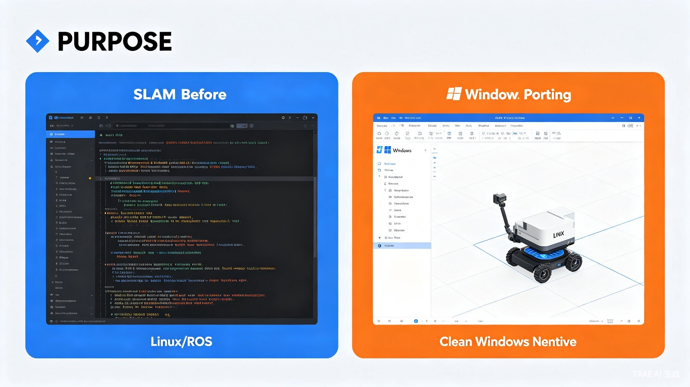

01项目背景
SLAM 技术长期被 Linux 平台垄断，Windows 开发者被拒之门外。
SLAM（Simultaneous Localization and Mapping，即时定位与地图构建）是自动驾驶、机器人导航、AR/VR 等领域的核心底层技术。然而，当前所有主流 SLAM 算法——ORB-SLAM、DSO、VINS-Mono、LSD-SLAM 等——均仅在 Linux 平台上运行，并深度依赖 ROS（Robot Operating System）框架。
这意味着：全球超过 70% 的桌面开发者（Windows 用户）无法在自己的开发环境中使用 SLAM 技术，必须在 Linux 虚拟机或双系统中进行开发，极大地增加了学习成本和技术门槛。
02核心创新
通过深度代码重构，实现四大关键技术突破。
去除 ROS 依赖
将 ROS 的发布/订阅通信机制替换为跨平台的消息传递方案，实现零 ROS 依赖的原生运行，彻底摆脱 Linux 生态束缚。
跨平台构建系统
使用 CMake 替代 catkin 构建工具链，支持Visual Studio 原生编译，开发者无需学习 Linux 构建系统即可上手。
Windows 原生 UI
提供直观的 Windows 图形界面，支持实时可视化SLAM 运行过程，降低使用门槛，无需命令行操作。
平台性能优化
针对 Windows 平台的内存管理和线程调度特性进行深度优化，确保在 Windows 上达到与 Linux 同等甚至更优的运行性能。
03平台对比：Linux vs Windows
从开发环境到运行部署，WinSLAM 全面降低 SLAM 技术的使用门槛。
传统 Linux SLAM 旧方案
- ✕ 必须安装 ROS 框架（数GB依赖）
- ✕ 仅支持 Ubuntu 特定版本
- ✕ 编译依赖 catkin，学习成本高
- ✕ 无图形界面，仅命令行操作
- ✕ 与 Windows 工具链不兼容
- ✕ 部署需虚拟机或双系统
WinSLAM 方案 本作品
- ✓ 零外部框架依赖，开箱即用
- ✓ 支持 Windows 10/11 全版本
- ✓ CMake + Visual Studio，一键编译
- ✓ 原生 Windows GUI，实时可视化
- ✓ 完美兼容 Windows 开发生态
- ✓ 直接运行，无需额外环境

04技术架构
模块化设计，清晰的分层架构实现跨平台移植。
可视化界面
ORB-SLAM3 / DSO
替代 ROS 通信
跨平台编译
线程/内存/IO
05应用场景
WinSLAM 为 Windows 生态下的多个前沿领域打开大门。
机器人开发
Windows 开发者可直接在本地环境进行机器人导航算法开发与调试，无需搭建 Linux 环境，大幅提升开发效率。
自动驾驶仿真
与 Windows 平台上的 Carla、AirSim 等主流仿真器无缝集成，实现端到端的自动驾驶算法验证。
AR / VR 应用
为 HoloLens、Windows Mixed Reality 等设备提供底层空间定位能力，赋能下一代交互体验。
科研与教育
降低 SLAM 技术的学习门槛，让更多学生和研究者可以在熟悉的 Windows 环境中学习和实验 SLAM 算法。
06为什么这个项目值得关注
"在 SLAM 领域，Windows 平台一直是一片空白。WinSLAM 是第一个填补这个空白的作品，它让 SLAM 技术变得更加普惠。"
填补行业空白
当前业界尚无任何在 Windows 平台原生运行的开源 SLAM 方案，WinSLAM 是第一个吃螃蟹的人。
技术普惠
让数千万 Windows 开发者无需学习 Linux 即可使用 SLAM 技术，真正实现技术民主化。
开源开放
项目计划完全开源，以 MIT 协议发布，鼓励社区贡献和二次开发，推动 SLAM 技术生态繁荣。
高扩展性
模块化架构设计，可轻松扩展支持更多传感器（RGB-D、LiDAR、IMU）和更多 SLAM 算法。
07开发路线图
从 MVP 到生态，WinSLAM 的旅程才刚刚开始。
Phase 1：核心移植（已完成）
完成 ORB-SLAM3 核心算法在 Windows 平台的编译与运行，移除 ROS 依赖，实现基本定位与建图功能。
Phase 2：功能完善（进行中）
开发 Windows 原生 GUI 界面，支持实时可视化，增加多传感器数据接入，优化运行性能。
Phase 3：生态建设（计划中）
开源发布，建立社区，支持更多 SLAM 算法（DSO、VINS），提供 API 接口和插件系统。
Phase 4：商业化探索（远期）
推出企业级版本，支持 Windows + Linux 双平台，提供技术支持和定制化服务。